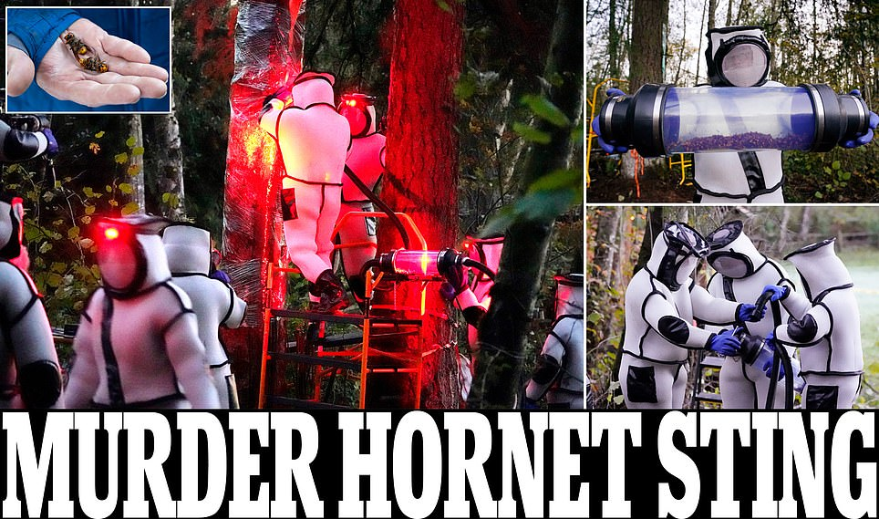
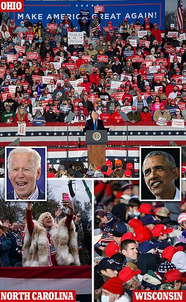
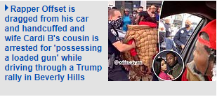
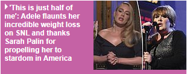
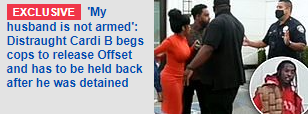
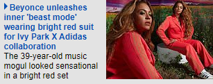
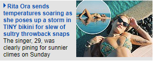
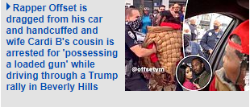
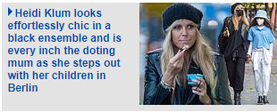
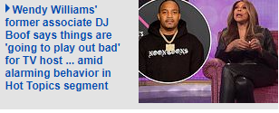

Saturday, Oct 24th 2020 8PM 20'C 11PM 20'C 5-Day forecast

The Washington State Department of Agriculture wiped out the nest Saturday to protect native honeybees, marking the first successful attempt to locate and remove a nest on US soil. The cavity of the tree was filled with foam and covered with plastic wrap to prevent the hornets from escaping. A tube was then inserted to vacuum up the hornets trapped inside and deposit them in a collection chamber. WSDA workers were seen in protective suits working under the cover of darkness early Saturday morning (left) to remove and destroy the nest. By mid-morning the WSDA announced the plan had been a success (right workers holding the hornets). Entomologists discovered the Asian giant hornet nest in Blaine, Washington state Thursday. The nest the size of a basketball was found inside the cavity of a tree on private property. Experts had attached tracking devices to some of the hornets which led them to the site where they saw dozens of hornets entering and exiting this week.
Joe Biden calls Trump supporters 'chumps' as they try to crash his drive-in Pennsylvania rally as he defends its small size saying 'we don't want to become superspreaders'

Lou Dobbs has slammed GOP Senator Lindsey Graham on Fox Business. He implored South Carolina voters to reject the four-term senator in November's election. Dobbs expressed anger the heads of Twitter and Facebook would not testify before the Senate over allegations of anti-conservative bias until after the election. Twitter head Jack Dorsey and Facebook CEO Mark Zuckerberg will testify before the U.S. Senate Judiciary Committee in mid-November, but Graham who Senate Judiciary Chairman, could likely have pushed for an earlier date. 'I don't know why anyone in the great state of South Carolina would ever vote for Lindsey Graham,' Dobbs said. 'It's just outrageous.'

Senate advances Supreme Court nominee Amy Coney Barrett in 51-48 vote with confirmation Monday all but guaranteed
Senate Republicans voted overwhelmingly Sunday to advance Supreme Court nominee Amy Coney Barrett toward final confirmation despite Democratic objections on Sunday.
Click through pictures
FIVE of Mike Pence's aides test positive for COVID: VP's chief of staff, his senior political advisor and three more staff members get infected
Pence's office confirmed the VP has tested negative after the cluster was confirmed. The circumstances around their infections are unclear and it's not known whether they stemmed from an event
Senate advances Supreme Court nominee Amy Coney Barrett in 51-48 vote with confirmation Monday all but guaranteed
Senate Republicans voted overwhelmingly Sunday to advance Supreme Court nominee Amy Coney Barrett toward final confirmation despite Democratic objections on Sunday.
Texas boy, 3, accidentally shoots himself dead at his birthday party after finding a relative's gun that 'had fallen out of a pocket'
An unidentified three-year-old boy has died in Porter, Texas, after he accidentally shot himself in the chest with a pistol during his birthday party. The gun fell out of a family member's pocket.
site web
FEMAIL TODAY








_______________________________________________
The Hunter leaks
Alleged Hunter Biden sex tapes are uploaded on Chinese video site linked to Steve Bannon
Multiple videos and images claiming to show Hunter Biden (left) in sexually explicit scenes and using drugs were reportedly shared on Chinese video platform GTV, which is linked to Steve Bannon, (right) on Saturday evening. GTV is a subsidiary of GTV Media Group, which was founded by former Trump senior adviser Bannon and Chinese billionaire Guo Wengui in April 2020. One of the videos accuses Biden as being '100% controlled by the Chinese Communist party'. It's not clear if the footage came from the 'laptop from hell', but some images appear to be from a third party laptop.
_______________________________________________
Back to top
Home | News | U.S. | Sport | TV&Showbiz | Australia | Femail | Health | Science | Money | Video | Travel | DailyMailTV | Discounts
Sitemap | Archive | Video | Archive | Topics | Index | Mobile | Apps | Screensaver | RSS | Text-based site | Reader | Prints | Our Papers | Top of page
Daily Mail | Mail on Sunday | This is Money
Metro | Jobsite | Mail Travel | Zoopla.co.uk | Prime Location
Published by Associated Newspapers Ltd
Part of the Daily Mail, The Mail on Sunday & Metro Media Group
Contact us How to complain Leadership Team Advertise with us Contributors Terms Do not sell my info Privacy policy & cookies